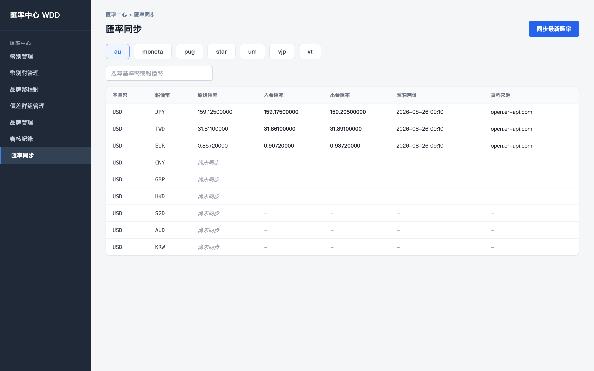
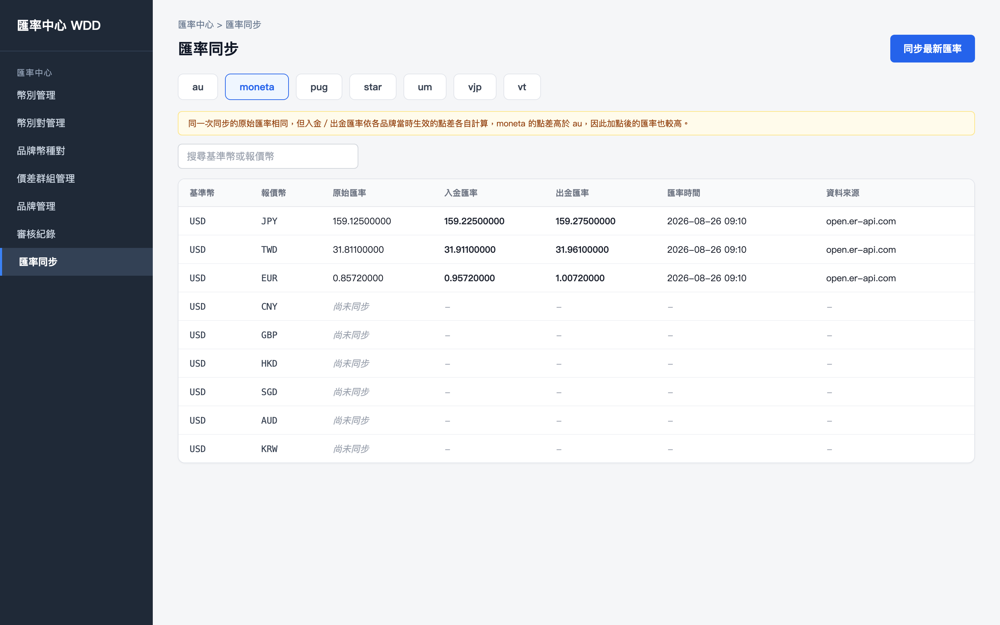
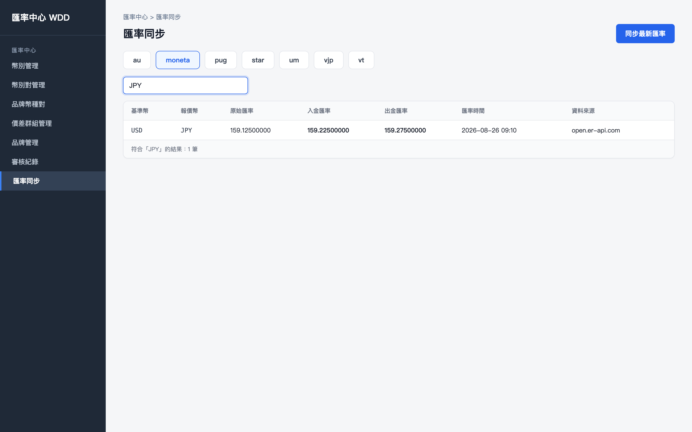
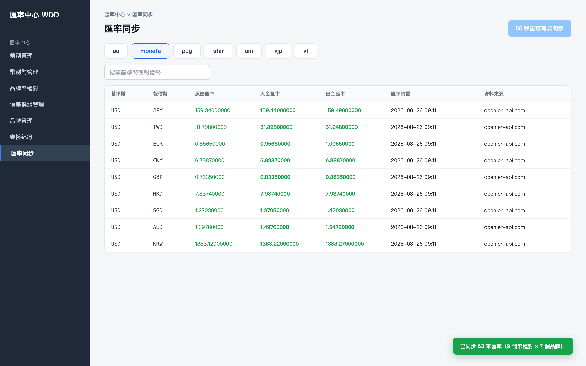
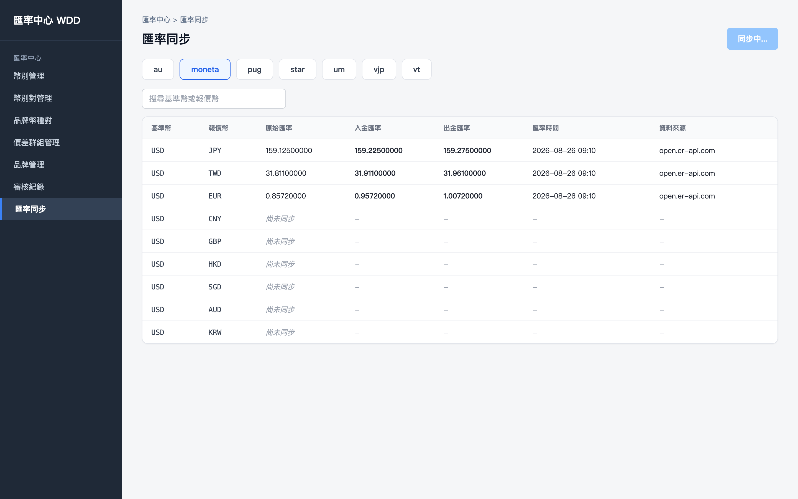

初始畫面：選定「au」品牌，部分幣種對已有同步紀錄（顯示原始匯率／入金匯率／出金匯率），其餘尚未同步

點擊「moneta」品牌分頁：切換為 moneta 的匯率快照，原始匯率不變，但入金／出金匯率依 moneta 當時生效的點差重新計算，數值與 au 不同

在搜尋框輸入「JPY」：僅列出基準幣或報價幣符合的幣種對

同步完成：目前選定品牌（moneta）的所有幣種對顯示最新快照，Toast 顯示全部品牌加總的同步筆數，按鈕進入冷卻倒數

清空搜尋後點擊「同步最新匯率」：按鈕顯示「同步中...」並停用